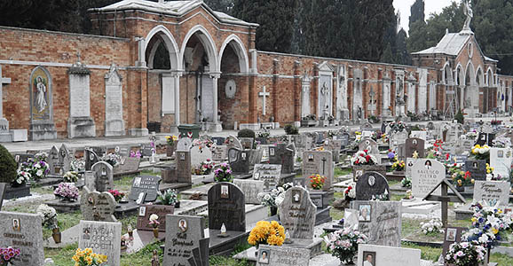

Die Toteninsel San Michele in Venedig ist ein einzigartiger Friedhof. Nirgendwo sonst wurde eine komplette Insel als Friedhof gestaltet.

Seit dem 13. Jahrhundert befand sich auf San Michele ein Kloster der Kamaldulenser, von dem noch der Kreuzgang, die ab 1469 von Mauro Codussi erbaute Renaissancekirche San Michele in Isola und die um 1530 von Guglielmo Bergamasco errichtete sechseckige Cappella Emiliani erhalten sind. In diesem Kloster zeichnete der Mönch Fra Mauro zwischen 1457 und 1459 seine kreisförmige Weltkarte. Die bei Umwandlung zum Friedhof mit San Michele verbundene Insel San Cristoforo della Pace gehörte dem gleichnamigen Kloster. 1719 verpachtete das Kloster einen Teil der Insel an die Evangelische Gemeinde Augsburgischer Konfession in Venedig.[2][3] Die zuständige Gesundheitsbehörde Magistrato della Sanità verfügte, dass das Pachtgelände von einer Mauer zu umgeben war, um von außen nicht einsehbar zu sein. Zugang durfte nur von der Wasserseite bestehen, was die Behörde mit der notwendigen Rücksichtnahme gegenüber dem katholischen Kultus begründete.[3] 1810 löste die französische Regierung das Kloster San Cristoforo auf.
Von Beginn an hatte San Michele mit Platzmangel zu kämpfen. Das ist auch heute nicht anders. Derzeit endet die Ruhezeit für eine Grabstelle meist nach rund zehn bis zwölf Jahren. Nur wenige können sich Familiengrabstellen mit hundertjähriger Ruhezeit leisten. Früher verlegte man die sterblichen Überreste der Toten in das Ossuarium (Beinhaus). Es befindet sich auf der nahe gelegenen Insel Sant’Ariano. Es wurde schon 1565 zur Entlastung der zahlreichen Kleinfriedhöfe in der Stadt eröffnet. Dort sollen die sterblichen Überreste mehrere Meter aufeinander geschichtet liegen. Das als Knocheninsel bekannte Eiland gilt heute als überwuchert und unzugänglich.Angehörige, die es sich leisten können, beantragen eine dauerhafte Bestattung auf San Michele. Dazu werden Asche und Knochen der Exhumierten platzsparend in kleinen Metallkästchen aufbewahrt. Wenn es keine lebenden Angehörigen gibt oder sie nicht zahlungskräftig sind, werden die sterblichen Überreste auch heute noch in ein kommunales Ossuarium auf dem Festland gebracht.